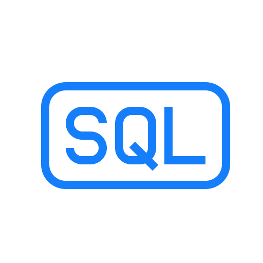

Pengertian dan Jenis Bahasa Pemrograman:
Bahasa Pemrograman Tingkat Tinggi
1. Python

Python adalah bahasa pemrograman tingkat tinggi yang dirancang untuk kemudahan penggunaan dan keterbacaan. Dengan sintaks yang sederhana dan jelas, Python populer dalam pengembangan web, analisis data, kecerdasan buatan, pembelajaran mesin, dan otomatisasi.
2. JavaScript
JavaScript adalah bahasa pemrograman untuk menciptakan interaktivitas di situs web. Bahasa ini memungkinkan pengembang untuk mengubah konten halaman secara dinamis, memvalidasi formulir, dan mengimplementasikan berbagai efek visual.
3. PHP
PHP (Hypertext Preprocessor) adalah bahasa scripting untuk pengembangan web dinamis yang dapat berinteraksi dengan pengguna dan database. PHP memungkinkan pengembangan aplikasi web yang kompleks dengan relatif mudah.
Bahasa Pemrograman Tingkat Rendah
1. Assembly Language
Bahasa pemrograman assembly memiliki keterkaitan langsung dengan instruksi mesin spesifik untuk arsitektur komputer tertentu, memberikan kontrol yang sangat tinggi terhadap perangkat keras.
2. Machine Language
Bahasa mesin terdiri dari kode biner (0 dan 1) yang dapat langsung dieksekusi oleh CPU. Program dalam bahasa mesin hanya dapat dijalankan pada jenis prosesor tertentu.
3. Low-Level Programming Language
Bahasa pemrograman tingkat rendah memberikan kontrol tinggi terhadap perangkat keras, seperti bahasa assembly dan bahasa mesin, umumnya digunakan dalam pengembangan sistem operasi dan pengontrol perangkat keras.
Bahasa Pemrograman Berorientasi Objek (OOP)
1. Java

Java adalah bahasa pemrograman berorientasi objek yang populer karena kemampuannya untuk membuat aplikasi yang berjalan di berbagai platform ("tulis sekali, jalankan di mana saja" atau WORA).
2. C++
C++ adalah pengembangan bahasa C dengan fitur OOP seperti kelas, pewarisan, dan polimorfisme, memungkinkan pembuatan aplikasi yang efisien dan kompleks.
Bahasa Pemrograman Imperatif
1. C
C adalah bahasa pemrograman imperatif tingkat menengah yang populer untuk pengembangan perangkat lunak sistem. Bahasa ini mengutamakan kontrol langsung atas memori dan sumber daya komputer.
Bahasa Pemrograman Deklaratif
1. SQL (Structured Query Language)

SQL adalah bahasa deklaratif untuk mengelola dan memanipulasi basis data, memungkinkan pengguna untuk mengambil, menyisipkan, memperbarui, atau menghapus data tanpa mengkhawatirkan cara teknis di balik proses tersebut.
2. HTML (Hypertext Markup Language)

HTML adalah bahasa deklaratif untuk struktur dan konten halaman web. Pengguna mendefinisikan elemen-elemen seperti paragraf, gambar, dan tautan melalui tag HTML.
3. Prolog (Programming in Logic)
Prolog adalah bahasa deklaratif yang sering digunakan dalam kecerdasan buatan dan pemrograman logika, di mana pengguna mendefinisikan fakta, aturan, dan tujuan, dan sistem menyelesaikan tujuan tersebut berdasarkan logika.